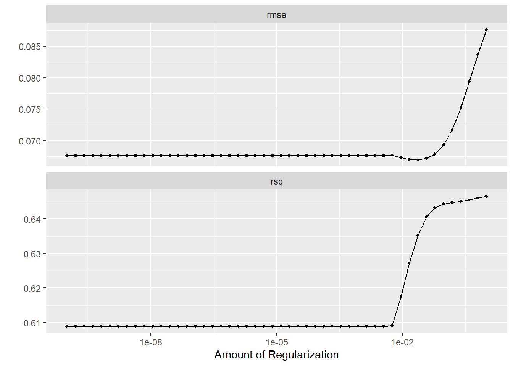

Module 4 R Tools: Hyperparameter Tuning with Tidymodels
One Ring to Rule Them All
Module 4 has primarily focused on alternative methods for finding coefficients in the linear regression model \[
Y = X \beta + \varepsilon
\] with a brief address of classification models as well. We have seen several different functions useful for estimating \(\beta\):
lm(): core R function which uses OLS to estimate \(\beta\)
regsubsets(): function in the leaps package which determines the best OLS model with \(i\) predictors for \(i=1,...,p\) and produces complexity metrics for comparison
glmnet(): function from the glmnet package which applies ridge, lasso, or elastic net to estimate \(\beta\)
We also saw that cross-validation is an important tool for model evaluation and hyper-parameter tuning. In Module 3, we developed KNN and logistic regression for classification problems and had to write our own loops to tune \(K\) in KNN.
As our toolbox grows, it would be nice to have a unified framework that smooths out syntax across different models and automates the workflow hyper-parameter tuning. The tidymodels package is designed with exactly that purpose in mind1. In these notes we’ll focus on its most powerful application: hyperparameter tuning.
The Tidymodels Workflow
There is a four step process to using the tidymodels framework:
Model specification: specify which model to use and which R package (“engine”) to use for fitting
Resampling plan: describe how to split the data for model evaluation (e.g. 10-fold cross-validation, LOO)
Tuning and evaluation: fit the specified model across a grid of hyperparameter values using the resampling plan and calculate model performance metrics (e.g. RMSE, \(R^2\), accuracy)
Final fit: select the best hyperparameters and fit the final model to the full training dataset
To build up to hyperparameter tuning, let’s first see how the workflow looks for a simple OLS model with no hyperparameters to tune.
Warm Up: OLS with tidymodels
# Step 0: Load data and packageslibrary(tidymodels)set.seed(516)df_url ="https://raw.githubusercontent.com/jmayberr/math133-stat-learning-fall2026/refs/heads/main/Datasets/election2016.csv"election2016 =read.csv(df_url)# Step 1: Model specificationlm_spec =linear_reg() |>set_engine("lm")# Step 2: Resampling plan; using 10-Fold CV with 10 repeats for additional stabilitycv_plan =vfold_cv(election2016[,2:10], v =10, repeats =10)# Step 3: Evaluate (no hyperparameters to tune here)lm_fit =fit_resamples( lm_spec, trump.vote ~ .,resamples = cv_plan)collect_metrics(lm_fit)
# A tibble: 2 × 6
.metric .estimator mean n std_err .config
<chr> <chr> <dbl> <int> <dbl> <chr>
1 rmse standard 0.0703 100 0.00296 pre0_mod0_post0
2 rsq standard 0.582 100 0.0274 pre0_mod0_post0
The mean column shows the average metric across all folds and std_err is its standard deviation across folds. Using repeats = 10 gives a more stable estimate of the cross-validated RMSE than a single fold split.
For OLS there are no hyperparameters so Step 3 uses fit_resamples() rather than tune_grid(). Once we are happy with the evaluation, Step 4 fits the final model to the full dataset:
# Step 4: Fit final modellibrary(broom)final_fit_lm =fit(lm_spec, trump.vote ~ ., data = election2016[,2:10])tidy(final_fit_lm)
This is fine but honestly lm() directly is simpler for OLS — the real payoff of tidymodels comes when we need to tune hyperparameters, as we’ll see next.
The Main Event: Hyperparameter Tuning
Now let’s see where tidymodels really earns its keep. We’ll tune the penalty parameter \(\lambda\) in a ridge model, something that required the somewhat clunky cv.glmnet() workflow in the last notes. Note that “mixture” is the alpha from Module 4.3 and “penalty” is the lambda.
# Step 1: Model specification with penalty to tuneridge_spec =linear_reg(penalty =tune(), mixture =0) |>set_engine("glmnet")# Step 2: Resampling plan; you can do repeats = 10 as well, but it takes longer to run cv_plan =vfold_cv(election2016[,2:10], v =10)# Step 3: Define grid of lambda values and tunelambda_grid =grid_regular(penalty(), levels =50)ridge_fit =tune_grid( ridge_spec, trump.vote ~ .,resamples = cv_plan,grid = lambda_grid)# Visualize tuning resultsautoplot(ridge_fit)

# Find best lambdabest_lambda =select_best(ridge_fit, metric ="rmse")best_lambda
The autoplot() shows how RMSE changes across the grid of \(\lambda\) values. You can see it decrease and then increase again as \(\lambda\) gets too large, which is the bias-variance tradeoff in action!
After completing tuning, we can look at our final model.
# Step 4: Finalize and fitfinal_ridge <-finalize_model(ridge_spec, best_lambda)final_fit_ridge <-fit(final_ridge, trump.vote ~ ., data = election2016[,2:10])tidy(final_fit_ridge)
Notice how clean this is compared to the cv.glmnet() workflow from the last notes. There is no manual matrix conversion, no lambda.min extraction, and tidy() gives us a clean coefficient table directly!
Tuning Both Parameters: Elastic Net
In the ridge example above we fixed mixture = 0 and only tuned penalty. But we can also tune mixture alongside penalty to let the data decide whether ridge, lasso, or something in between works best. As we mentioned in Module 4.3, this is called elastic net and requires only a small change to the model specification:
# Step 1: Elastic net with both parameters to tuneelastic_spec =linear_reg(penalty =tune(), mixture =tune()) |>set_engine("glmnet")# Step 2: Resampling plan (same as before)cv_plan =vfold_cv(election2016[,2:10], v =10)# Step 3: 10x10 grid over both parameters (100 models total) # Could do 20x20 by switching levels = 20 but it takes a while to runelastic_grid =grid_regular(penalty(),mixture(),levels =10)elastic_fit =tune_grid( elastic_spec, trump.vote ~ .,resamples = cv_plan,grid = elastic_grid)autoplot(elastic_fit)
The autoplot() is particularly informative here since it shows performance across both dimensions simultaneously. You can see at a glance whether ridge (\(\alpha = 0\)), lasso (\(\alpha = 1\)), or something in between works best for this data. In this case, it turns out ridge was best
# Step 4: Finalize and fitfinal_elastic <-finalize_model(elastic_spec, best_params)final_fit_elastic <-fit(final_elastic, trump.vote ~ ., data = election2016[,2:10])tidy(final_fit_elastic)
Notice that the only change from the ridge example was adding mixture = tune() to the model specification and including mixture() in the grid. Everything else (the resampling plan, tune_grid(), select_best(), and finalize_model()) stayed exactly the same. That’s the one ring in action!
Tuning K in KNN: The Same Workflow
As another example of where the “one ring” idea really pays off, recall from Module 3 that we had to write a clunky for loop to find the optimal \(K\) in KNN. With tidymodels, the workflow is almost identical to the ridge example above. We just change the model specification!
We’ll demonstrate by predicting the binary outcome in election2016. Note that you’ll need to install and load the kknn package first. Note that we will decrease the number of folds to 5 here because with \(K=10\) there are only 5 observations per fold and the accuracy will always be 0, 0.2, 0.4, 0.6, 0.8 or 1. Note also the addition of the “strata” argument for resampling. This ensures that when the folds are formed they will have representation from both classes of our outcome (red/blue).
library(kknn)# Step 1: KNN specification with K to tuneknn_spec =nearest_neighbor(neighbors =tune()) |>set_engine("kknn") |>set_mode("classification") # Default is regression # Step 2: Resampling plan (stratified by outcome for classification)election2016$outcome=as.factor(election2016$outcome)cv_plan =vfold_cv(election2016[,c(2:9,11)], v =5,repeats=10,strata=outcome)# Step 3: Tune Kk_grid =grid_regular(neighbors(range =c(1, 30)), levels =30)knn_fit =tune_grid( knn_spec, outcome ~ .,resamples = cv_plan,grid = k_grid,metrics =metric_set(accuracy, bal_accuracy))autoplot(knn_fit)
# Step 4: Finalize and fitfinal_knn =finalize_model(knn_spec, best_k)final_fit_knn =fit(final_knn, outcome ~ ., data = election2016[,c(2:9,11)])
Compare how much cleaner this is than the for loop from Module 3! And critically, the workflow is identical to the ridge example — only the model specification changed. That’s the whole point of tidymodels.
Logistic Regression with Elastic Net Tuning
You can also apply elastic net regularization to logistic regression which is useful when you have many predictors and want to do feature selection and classification simultaneously. The workflow is identical to the ridge/lasso examples after a couple small modifications to Step 1:
election2016$outcome =as.factor(election2016$outcome)# Step 1: Logistic regression with elastic net penalties to tunelog_spec =logistic_reg(penalty =tune(), mixture =tune()) |>set_engine("glmnet") |>set_mode("classification")# Step 2: Resampling plan (stratified by outcome since classes may be imbalanced)cv_plan =vfold_cv(election2016[,c(2:9,11)], v =5, repeats =10,strata = outcome)# Step 3: Tune penalty and mixtureelastic_grid =grid_regular(penalty(),mixture(),levels =10)log_fit =tune_grid( log_spec, outcome ~ .,resamples = cv_plan,grid = elastic_grid,metrics =metric_set(accuracy, bal_accuracy))autoplot(log_fit)
The key insight is that the workflow is identical regardless of whether you are tuning \(\lambda\) in ridge, \(K\) in KNN, or any other hyperparameter in any other model. That uniformity is what makes tidymodels worth learning!
Practice
Repeat the practice problems from 4.3 using the tidymodels workflow (applied to the training data). Which do you prefer?
Bonus: Tune the model for both penalty and mixture using tidymodels. Compute the test RMSE for this model and compare with the optimal lasso/ridge from 4.3.
Footnotes
Although like the one ring, it takes a toll on its user.↩︎